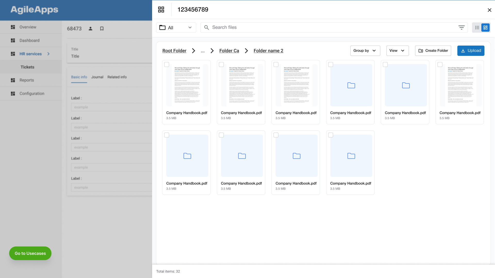
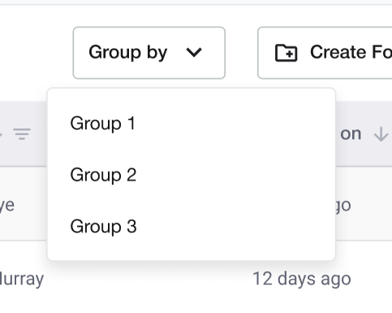
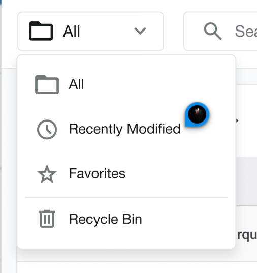
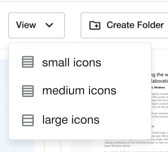
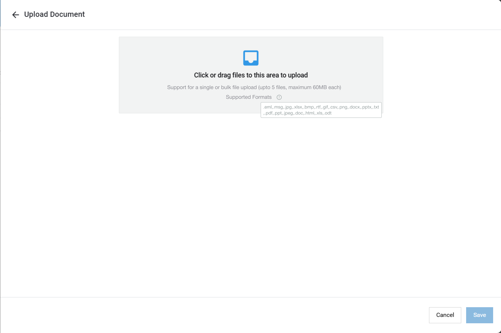
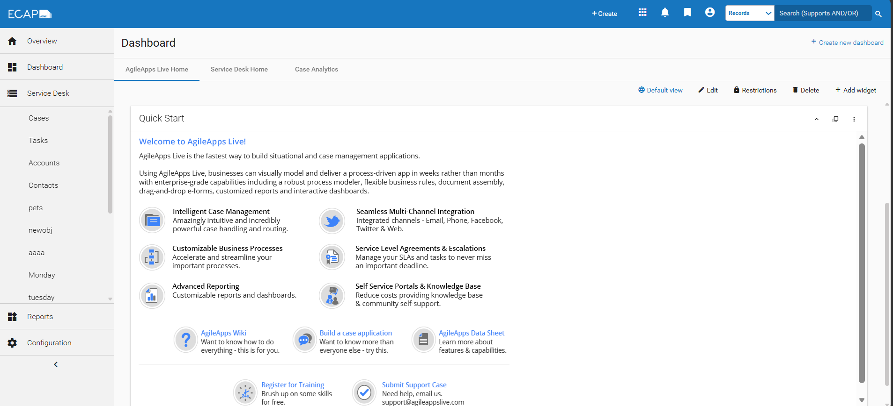

Other features shipped in File Manager
Four smaller features shipped alongside the main File Manager case study, plus one idea still in research.
Grid / list view
Thumbnail grid, category filter, group by, and icon sizes on top of the existing list.
Supported file extensions
Formats surfaced on the upload screen, before the upload runs instead of after it fails.
Sharing outside ECAP
A Share link for people outside the platform, with access and expiry controls.
Quick Start redesign
A hero banner and card-based features replacing a paragraph of dense text.
My role
Product Designer
Timeline
Sept 2025 · ongoing, alongside the main release cycle
Shipped
Four more features, same module, same users.
Same research, same backlog, smaller scope. Each fix removes a point where users had to guess or work around a gap.
Grid / list view
Folders of images or scans showed only file names, so users opened each file to see what it was. Four changes give more control over browsing:

Grid / list toggle
Users switch between a thumbnail grid and a list depending on the task: scanning images, or skimming details. The most well-received part of the redesign.
Impact — more control over how they browse, and faster recognition in image-heavy or scanned-document folders.

Group by
Clusters files by type, date, or size instead of one long list.
Impact — large folders feel organized, not overwhelming.

Page categorization
Jump straight to Favorites, Recents, or the Recycle Bin.
Impact — frequent files are a click away, not a search.

Icon size control
Small, medium, or large icons in grid view.
Impact — fits more on screen, or zooms in on thumbnails.
Explicit close on file preview
Replaced click-outside-to-dismiss with an explicit close button — users kept losing their preview by accident.
Impact — fewer accidental dismissals, less re-opening the same file.
Supported file extensions
Users learned which file types were supported only after an upload failed. The full format list now shows on the upload screen.
Impact — fewer failed uploads and support questions.

Sharing outside ECAP
Sharing worked only between ECAP users. Vendors, clients, and auditors outside the platform had to be sent a downloaded copy. Added a Share link with access and expiry controls.

Walking through the share dialog

Quick Start redesign
The old Quick Start was a static wall of outdated text, with nothing clickable. Rebuilt as a hero banner with a Learn More button, feature cards, and Quick Actions and Resources panels linking to the wiki, training, and support docs.
Before

After
Impact
Folders of scans can be scanned visually, not opened one by one
Users check the format list instead of guessing and hitting an error
Vendors and clients get a link, not a re-sent copy
New users land on what the platform does, not a paragraph
In progress
An idea everyone liked immediately — still needs the research to back it.
Save Draft while uploading
Save a half-finished upload as a draft and come back to it later. Early exploration below.
What it is
A button in the upload dialog that saves a half-finished upload as a draft. The files and the metadata already typed in are kept. The draft sits in a Drafts list, and the user opens it later and publishes when ready.
Why I proposed it
Uploads break all the time — a closed tab, a dropped connection, a batch too big to finish in one sitting. Today all of that work is gone and the user types everything again. Users also told us they often start an upload before they have every detail ready, so they need somewhere to park it.
UX principles behind it
- Prevention over recovery — nothing entered is thrown away when an upload stops.
- Zeigarnik effect — the unfinished upload stays visible as a draft instead of vanishing.
- Recognition over recall — reopening a draft restores the metadata already entered.
- Jakob's Law — Save Draft and a Drafts list reuse a pattern from email and docs.
- Visibility of system status — Drafts (1) and Publish (0) counters show what is waiting.
- Flexibility & efficiency — bulk publish finishes several drafts in one action.
Why it is still in research
Everyone liked the idea, but liking it is not the same as knowing how it should work. A draft touches upload validation and storage, so there are open questions we cannot answer from the whiteboard:
- Does a draft hold the actual files, or only the details around them?
- How long do we keep a draft before it is cleaned up?
- What happens to a draft that fails validation when it is finally published?
Until those are settled the feature cannot be scoped honestly. The screens below are early exploration, not a final design.
Next case study